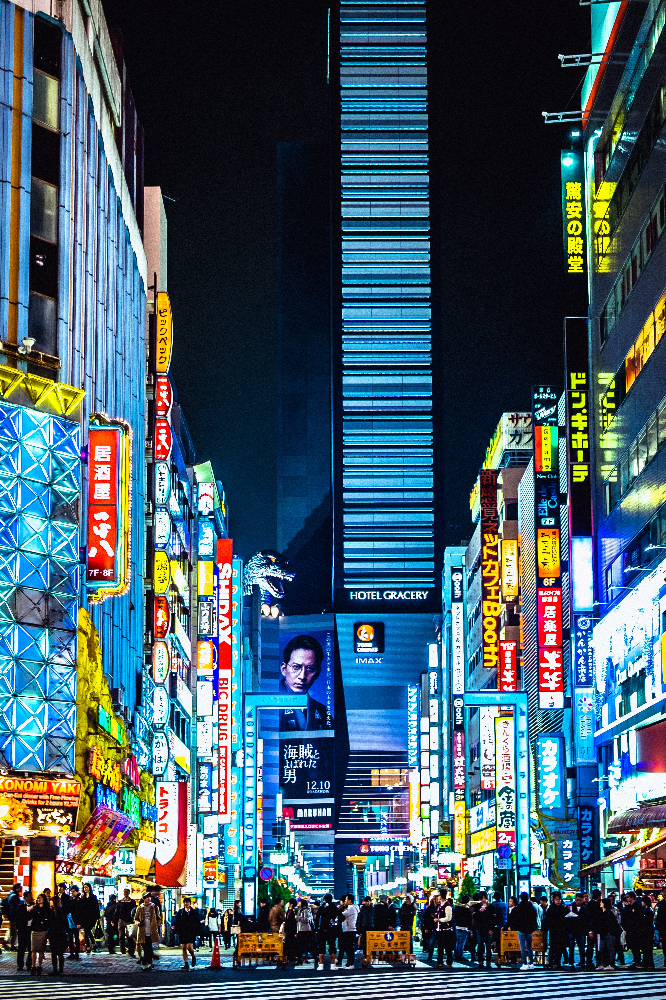
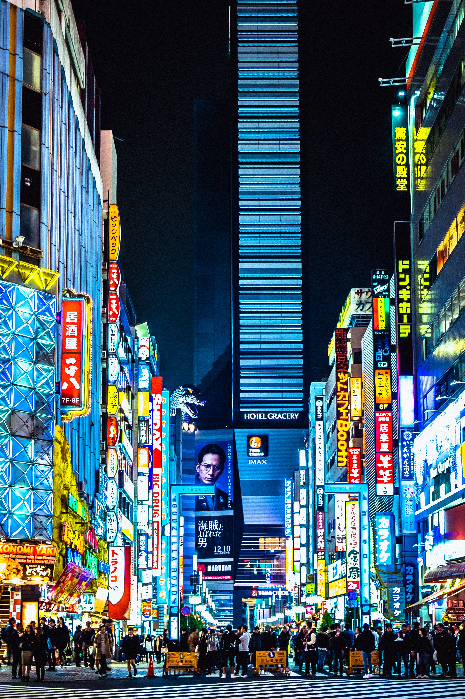

Mont Fuji
Shibuya
Tokyo Tower
Kabuki
Sensō Ji
Une montagne culminant à 3776 m. Sa traduction Kanji signifie abondance et richesse. Il existe pour les plus aguerris un chemin de randonnée.
Le célèbre passage piéton où tous les jours transitent 2,4 millions de personnes.
Fondé sur le modèle de la tour Eiffel, la Tokyo Tower mesure 336m de haut. Elle offre un magnifique panorama.
Une ville entre futur et passé, au détour de grands building on trouve de petites ruelles chargées d'Histoire
Fondé en 628, le Sensō Ji est le plus vieux temple boudhiste de Tokyo. Il est dédie à la déesse Kanon
Incontournable
Fulgurant
Impressionant
Futuriste
Enorme
 
